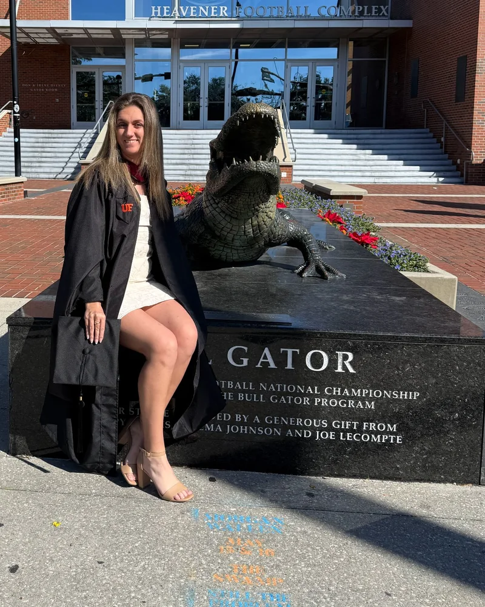
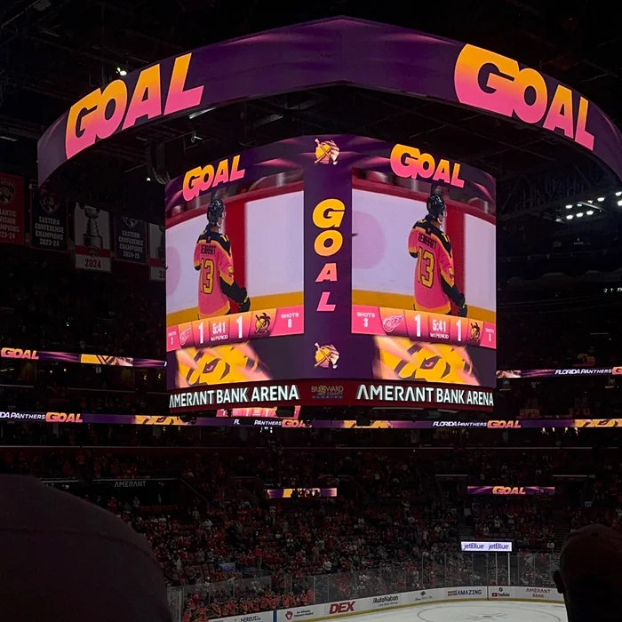
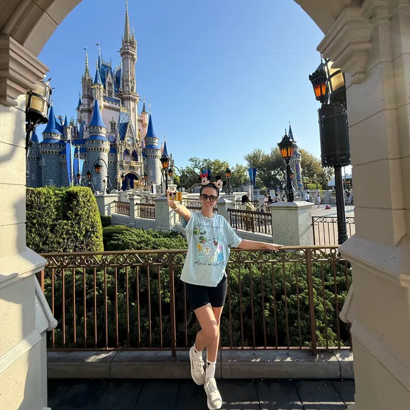
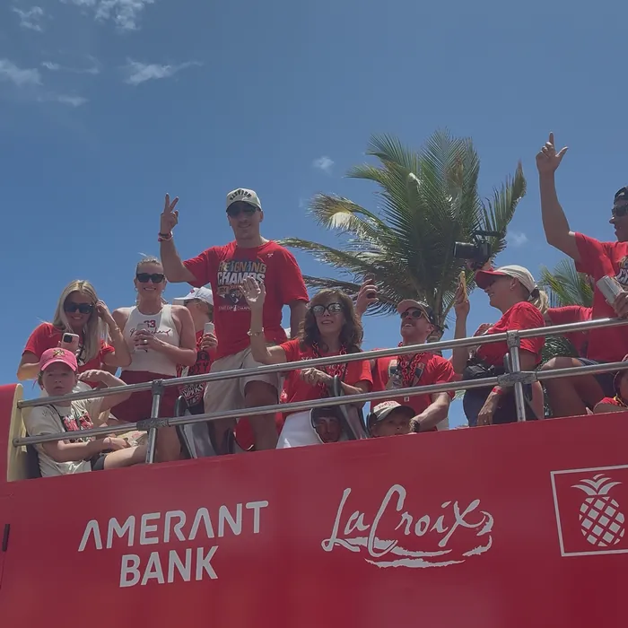
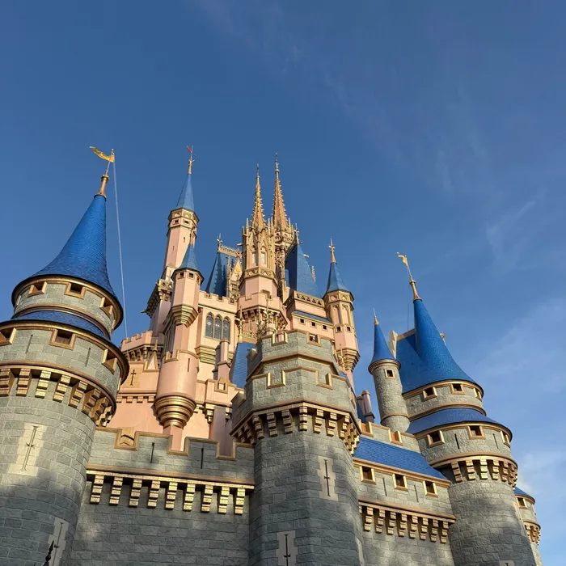
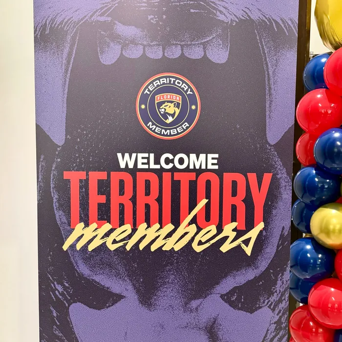
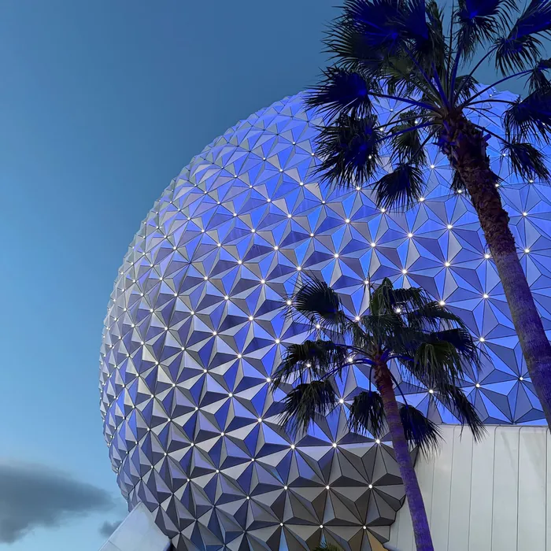

About me
Nice to meet you!
I'm a social media and digital marketing professional who loves turning ideas into content that makes people stop scrolling.

Go Gators!From science to storytelling
My journey into marketing wasn't exactly traditional. I graduated from the University of Florida with a bachelor's degree in Microbiology and Cell Science, but along the way, I discovered how much I enjoyed the creative side of communicating ideas and connecting with people.
That interest led me to pursue a Graduate Certificate in Social Media Management and eventually a master's degree in Mass Communication, specializing in social media.
My science background still influences how I approach my work. I bring curiosity, attention to detail, and a willingness to experiment with new ideas into everything I create.
Beyond the feed
When I'm not creating content, you'll probably find me cheering on the Florida Panthers, planning another Disney trip, or spending time with the people I love. I'm all about making memories, finding new experiences, and enjoying the little things along the way.

Goal!
Disney days!
Parade day!
Making memories!
Go Cats!
Evenings at Epcot!
Where creativity meets experience
Since stepping into the world of social media and digital marketing, I've had the opportunity to create content and manage social media for brands across different industries, each with its own personality, audience, and goals.
One of my favorite parts of the experience has been learning how to adapt my creativity to different brand voices while finding ways to make content feel authentic and relatable.
What I bring
Me, myself, and AI
I love finding new ways to combine creativity with technology. I've designed and tested custom AI-powered workflows using Claude to help streamline content planning, product discovery, and social media scheduling.
It's become one of my favorite things to experiment with, and I'm always testing what's next.